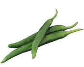

Spicy World


Chicken Chaap
(Non-Vegetarian)


After researching for a long time on the authentic recipe of Chicken chaap, here is the way how I made it. This recipe will give you the exact flavour of restaurant style Chaap. This dish should not be eaten as regular meal. It has a really rich gravy and goes best with pulao, biriyani, naan or roti. Try not to avoid any ingredient from the list otherwise you will not achieve the real taste.

Ingredients
- 2 big chicken legs.
- Half cup of hung curd.
- Half onion thinly sliced.
- 4 table spoons of poppy seeds.
- 10-15 cashews.
- 2 tsp of ginger and garlic paste.
- Spice powder (half tsp turmeric powder, 2 tsp red chili powder, 1 tsp coriander powder, 2 tsp garam masala powder, half tsp mace powder and half tsp nutmeg powder).
- 2 tablespoons of mawa/khoya kheer.
- 1 tsp kewra / rose water.
- 2 tablspoons of dalda (hydrogenated vegetable oil).
- 4 tablespoons of ghee.
- 2 tablespoons of white oil.
- Salt and sugar.
- Warm water.
Steps
- Dry roast the poppy seeds and cashews in a pan for 6-7 minutes. Keep aside and let it cool.
- In the same pan dry roast the sliced onion. You don't need to add oil. When you will get nice flavour from onion, remove them from pan and let it cool.
- Now halfly grind the roasted poppy seeds and cashews first.
- Then add the roasted onion into the grinder. Make a smooth paste with three of them. Keep aside.
- Wash chicken legs completely and pat dry. Make few slits on them.
- Take a big bowl. Add curd, the smooth paste, above mentioned all the spice powder, ginger and garlic paste, 1 tsp ghee, 1 tsp kewra water and salt. Mix this.
- Massage the chicken legs with the marination very well and then keep it in the refrigarator for atleast 4 hours.
- If you do not have mawa in your kitchen, do not panic. Just take 4 tablespoons of condensed milk, 3 tsps of milk powder and 5 tsps of butter. Mix this well and put it in the microwave for 40 seconds. Let it cool down and then you will get mawa.
- Now heat dalda, ghee and white oil one by one in a big pan.
- Then shake off the extra marination from chicken legs and place those in hot oil. Fry each side for 7 minutes.
- When it will become nice golden color, add all of the marination, salt and pinch of sugar in the pan. Mix this with chicken very well. The oil should float over the marination. Cook this for 30 minutes in slow flame. Change the sides in between. If the gravy becomes dry, add some warm water.
- When the chicken will become tendor then add the mawa in the gravy. It will make the gravy rich and thick. Cook it for another 5 minutes and turn off the heat. Let it rest for 5 minutes. Then serve.
Your Chicken chaap is ready ...
- Enjoy this hot with naan, pulaao or roti ...
Leave Your Comments